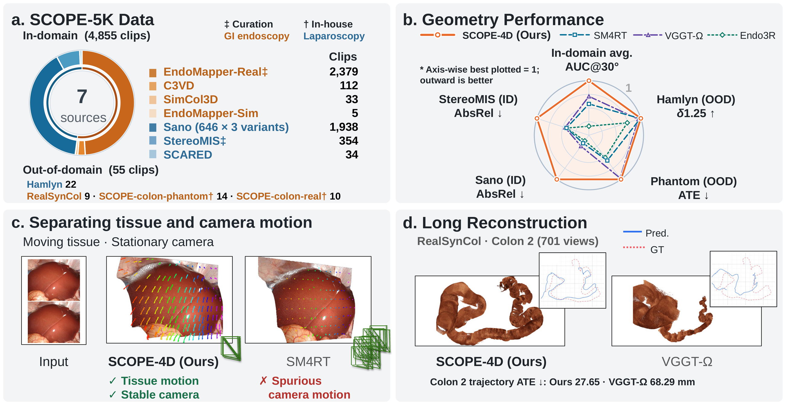
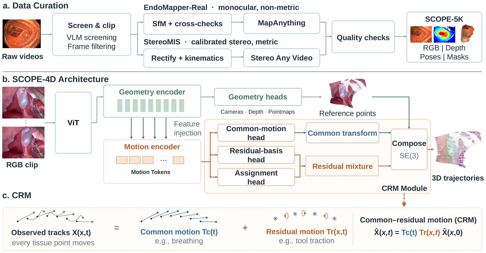
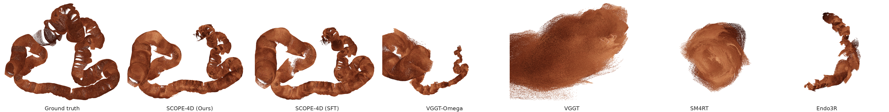
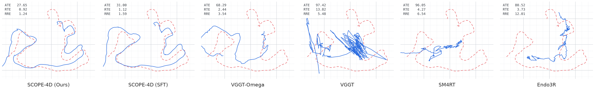
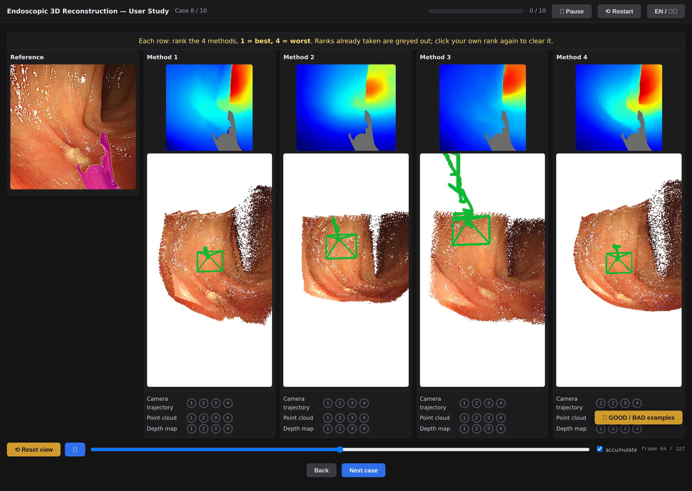
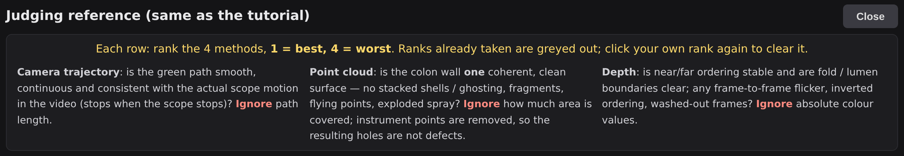

Camera, dense geometry and 3D tissue trajectories from monocular video, in one forward pass
Laparoscopy (top) and colonoscopy (bottom).
Geometric understanding supports endoscopic navigation and robotic assistance, but learning reliable endoscopic geometry faces two challenges: scarce geometric annotations, and ambiguity between camera motion and tissue deformation. We present SCOPE-4D, an endoscopic 4D geometry foundation model that jointly predicts camera parameters, dense geometry and 3D tissue trajectories from monocular RGB video in a single forward pass. Our curation and annotation pipeline constructs SCOPE-5K, about 5,000 clips spanning real and synthetic gastrointestinal endoscopy and laparoscopy, with newly collected phantom and real-colonoscopy evaluation sets. Geometric supervised fine-tuning on SCOPE-5K learns endoscopic priors that improve camera and depth estimation. Common–Residual Motion (CRM) further constrains local deformation relative to common tissue movement, enabling dense 3D tissue tracking and further improving camera and depth estimation. Evaluations on public and new benchmarks show strong in-domain and out-of-domain geometry, superior 3D tracking, and more stable long-sequence colon reconstruction; a blinded study with vision specialists supports perceived reconstruction quality on real clinical video.

SCOPE-4D builds on a feed-forward multi-view transformer. Geometric fine-tuning on SCOPE-5K supervises camera and dense depth. CRM represents every 3D point's motion as a shared common motion plus a local residual, and supervises the assignment so that residuals are small where tissue simply follows the common motion; this gives the model a way to separate tissue movement from camera motion without a hand-designed rigidity gate.

Real endoscopic video rarely comes with geometry. Our pipeline (panel a of the method figure) turns raw videos into clips with camera and depth labels: screening and clipping, per-clip structure-from-motion with tracking-based correspondences, dense labels from a camera-conditioned geometry model, and an automatic quality-control stage that accepts, flags or rejects each clip from cross-source agreement rather than appearance.
| Data source | GI | Laparo | Synthetic | Real | Depth | Camera | Clips |
|---|---|---|---|---|---|---|---|
| EndoMapper-Real | ✓ | ✓ | ✓† | ✓† | 2,379 | ||
| C3VD | ✓ | ✓ | ✓ | ✓ | 112 | ||
| SimCol3D | ✓ | ✓ | ✓ | ✓ | 33 | ||
| EndoMapper-Sim | ✓ | ✓ | ✓ | ✓ | 5 | ||
| Sano | ✓ | ✓ | ✓ | ✓ | 1,938 | ||
| StereoMIS | ✓ | ✓ | ✓† | ✓ | 354 | ||
| SCARED | ✓ | ✓ | ✓ | ✓ | 34 | ||
| Hamlyn | ✓ | ✓ | ✓ | 22 | |||
| RealSynCol | ✓ | ✓ | ✓ | ✓ | 9 | ||
| SCOPE-colon-phantom (new) | ✓ | ✓ | ✓ | 14 | |||
| SCOPE-colon-real (new) | ✓ | ✓ | 10 | ||||
| SCOPE-5K | ✓ | ✓ | ✓ | ✓ | ✓ | ✓ | 4,910 |
† annotations generated by our pipeline.
Accept
Borderline
Reject
EndoMapper-Real
EndoMapper-Real
StereoMIS
SCOPE-colon-phantom
Liver breathing
Instrument pulling tissue


Predicted trajectory GT trajectory
| Method | In-domain average | Hamlyn (OOD) | SCOPE-colon-phantom (OOD) | |||||||||
|---|---|---|---|---|---|---|---|---|---|---|---|---|
| Pose | Depth | Pose | Depth | Pose | ||||||||
| AUC@5°↑ | AUC@30°↑ | ATE↓ | AbsRel↓ | δ1.25↑ | ATE↓ | ARE↓ | AbsRel↓ | δ1.25↑ | ATE↓ | RTE↓ | ARE*↓ | |
| General-domain | ||||||||||||
| VGGT | 2.94 | 29.11 | 0.128 | 0.160 | 74.61 | 4.610 | 1.964 | 0.190 | 69.19 | 16.53 | 16.78 | 12.14 |
| VGGT-Ω | 7.81 | 48.07 | 0.049 | 0.093 | 91.07 | 4.496 | 1.746 | 0.135 | 80.82 | 8.54 | 10.79 | 8.22 |
| MapAnything | 2.63 | 26.22 | 0.122 | 0.141 | 85.00 | 4.984 | 1.960 | 0.166 | 74.15 | 15.98 | 17.70 | 26.98 |
| CUT3R | 0.27 | 15.55 | 0.131 | 0.300 | 54.06 | 4.571 | 1.693 | 0.185 | 70.27 | 13.64 | 16.56 | 22.48 |
| SpatialTrackerV2 | 6.01 | 44.85 | 0.058 | 0.113 | 86.98 | 5.499 | 2.241 | 0.142 | 77.42 | 10.92 | 13.80 | 11.23 |
| 4RC | 6.12 | 41.85 | 0.068 | 0.138 | 79.71 | 3.639 | 1.438 | 0.120 | 84.26 | 13.98 | 15.33 | 9.13 |
| Any4D | 0.29 | 11.18 | 0.160 | 0.215 | 65.25 | 4.755 | 1.114 | 0.167 | 72.23 | 16.94 | 17.57 | 12.15 |
| SM4RT | 4.86 | 38.72 | 0.087 | 0.147 | 77.78 | 3.517 | 1.350 | 0.120 | 83.94 | 14.46 | 15.50 | 9.17 |
| Endoscopy-specific | ||||||||||||
| Endo3R | 0.26 | 11.14 | 0.179 | 0.185 | 70.06 | 20.982 | 9.492 | 0.223 | 62.77 | 16.42 | 17.05 | 16.13 |
| AF-SfMLearner | 1.45 | 20.76 | 0.134 | 0.253 | 56.94 | 15.562 | 5.979 | 0.190 | 68.20 | 10.35 | 13.88 | 10.31 |
| EndoDAC | 1.41 | 19.08 | 0.130 | 0.201 | 66.22 | 18.057 | 8.968 | 0.191 | 68.87 | 11.51 | 15.03 | 10.54 |
| Endo-FASt3R | 4.13 | 35.02 | 0.062 | 0.230 | 60.39 | 9.152 | 3.794 | 0.211 | 64.75 | 8.70 | 11.39 | 9.22 |
| SCOPE-4DSFT (Ours) | 29.44 | 67.33 | 0.016 | 0.042 | 98.52 | 2.927 | 1.014 | 0.129 | 83.77 | 8.41 | 10.71 | 7.37 |
| SCOPE-4D (Ours) | 29.86 | 67.41 | 0.017 | 0.040 | 98.68 | 2.976 | 1.013 | 0.124 | 85.23 | 8.29 | 10.82 | 7.21 |
Camera and depth. Hamlyn depth excludes instruments. Bold best, underline second.
| Method | Sano | StereoMIS | ||||||||||||
|---|---|---|---|---|---|---|---|---|---|---|---|---|---|---|
| Tracking | Pose | Depth | Tracking | Pose | Depth | |||||||||
| EPE↓ | APD↑ | ATE↓ | RTE↓ | RRE↓ | AbsRel↓ | δ1.25↑ | EPE↓ | APD↑ | ATE↓ | RTE↓ | RRE↓ | AbsRel↓ | δ1.25↑ | |
| D4RT* | 2.035 | 72.94 | 0.014 | 0.239 | 0.215 | 0.193 | 65.76 | 7.540 | 34.12 | 0.043 | 0.940 | 0.344 | 0.147 | 87.20 |
| SpatialTrackerV2 | 0.933 | 90.58 | 0.017 | 0.223 | 0.125 | 0.145 | 78.76 | 6.870 | 38.98 | 0.049 | 0.677 | 0.195 | 0.107 | 95.24 |
| 4RC | 0.523 | 94.72 | 0.006 | 0.100 | 0.062 | 0.186 | 66.15 | 6.266 | 44.28 | 0.039 | 0.481 | 0.146 | 0.114 | 90.42 |
| Any4D | 0.535 | 94.41 | 0.010 | 0.376 | 0.309 | 0.188 | 66.01 | 7.277 | 42.45 | 0.061 | 2.203 | 0.765 | 0.144 | 82.72 |
| SM4RT | 0.411 | 95.64 | 0.007 | 0.104 | 0.081 | 0.182 | 67.31 | 6.276 | 43.95 | 0.025 | 0.427 | 0.158 | 0.116 | 92.57 |
| SCOPE-4D (Ours) | 0.442 | 96.11 | 0.001 | 0.054 | 0.051 | 0.033 | 99.75 | 5.022 | 53.08 | 0.010 | 0.211 | 0.114 | 0.050 | 98.80 |
3D tracking (mm) and geometry. D4RT* is an open-source reproduction.
| Training data | In-domain average | Hamlyn (OOD) | SCOPE-colon-phantom (OOD) | |||||
|---|---|---|---|---|---|---|---|---|
| Pose | Depth | Depth | Pose | |||||
| AUC@5°↑ | AUC@30°↑ | AbsRel↓ | δ1.25↑ | AbsRel↓ | δ1.25↑ | RTE↓ | ARE*↓ | |
| No finetune (VGGT-Ω weights) | 9.55 | 53.03 | 0.077 | 94.03 | 0.135 | 80.82 | 10.79 | 8.22 |
| SC+SIM+C3VD+EM-S+SA | 35.99 | 74.08 | 0.031 | 99.50 | 0.143 | 80.93 | 11.28 | 7.12 |
| + StereoMIS | 33.10 | 70.02 | 0.032 | 99.53 | 0.142 | 81.40 | 10.51 | 6.83 |
| + EndoMapper-Real | 36.62 | 74.07 | 0.032 | 99.57 | 0.128 | 83.04 | 10.37 | 7.37 |
| Full dataset | 36.02 | 73.68 | 0.030 | 99.59 | 0.129 | 83.77 | 10.71 | 7.37 |
Data composition, geometric fine-tuning only. Hamlyn depth excludes instruments. SC: SCARED, SIM: SimCol3D, EM-S: EndoMapper-Sim, SA: Sano.
| Variant | Tracking | Pose | Depth | |||
|---|---|---|---|---|---|---|
| EPE↓ | APD↑ | AUC@5°↑ | AUC@30°↑ | AbsRel↓ | δ1.25↑ | |
| SoM (baseline) | 5.94 | 46.58 | 5.67 | 26.86 | 0.050 | 98.82 |
| w/ zero-motion anchor | 5.30 | 50.11 | 6.09 | 27.17 | 0.048 | 98.82 |
| Full CRM | 5.27 | 52.63 | 6.96 | 27.66 | 0.049 | 98.85 |
| Method | ATE↓ | RTE↓ | RRE↓ |
|---|---|---|---|
| VGGT | 93.21 | 23.65 | 15.11 |
| VGGT-Ω | 85.92 | 21.67 | 31.21 |
| SM4RT | 88.95 | 21.29 | 16.98 |
| Endo3R | 77.87 | 14.75 | 22.92 |
| SCOPE-4DSFT (Ours) | 73.52 | 10.38 | 13.38 |
| SCOPE-4D (Ours) | 71.17 | 10.94 | 13.61 |
| Method | Camera trajectory↓ | Point cloud↓ | Depth map↓ |
|---|---|---|---|
| VGGT-Ω | 1.93 [1.65, 2.25] | 1.95 [1.65, 2.28] | 1.98 [1.67, 2.32] |
| SM4RT | 2.90 [2.60, 3.08] | 3.22 [2.80, 3.57] | 3.33 [2.87, 3.73] |
| Endo3R | 3.83 [3.53, 4.00] | 3.52 [3.23, 3.78] | 3.37 [3.00, 3.70] |
| SCOPE-4D (Ours) | 1.33 [1.12, 1.62] | 1.32 [1.13, 1.55] | 1.32 [1.13, 1.53] |
SCOPE-colon-real: mean rank from six researchers on ten clips (1 best, 4 worst), 95% bootstrap intervals.

